Gambar 1: Sambutan dari Kepala SMKS Kristen 2 Tomohon
Drs. Novrie Sumampouw
Gambar 1: Sambutan dari Kepala SMKS Kristen 2 Tomohon
Drs. Novrie Sumampouw
 Gambar 2: Materi dari Bpk. Trisno Muldani (Manager
Khayangan Senior Living)
Gambar 2: Materi dari Bpk. Trisno Muldani (Manager
Khayangan Senior Living)
 Gambar 3: Materi dari Bpk. Trisno Muldani (Manager
Khayangan Senior Living)
Gambar 3: Materi dari Bpk. Trisno Muldani (Manager
Khayangan Senior Living)
 Gambar 4: Doa Pembukaan dari Kepala Ruang Paulus RSU
GMIM Siloam Sonder
Gambar 4: Doa Pembukaan dari Kepala Ruang Paulus RSU
GMIM Siloam Sonder
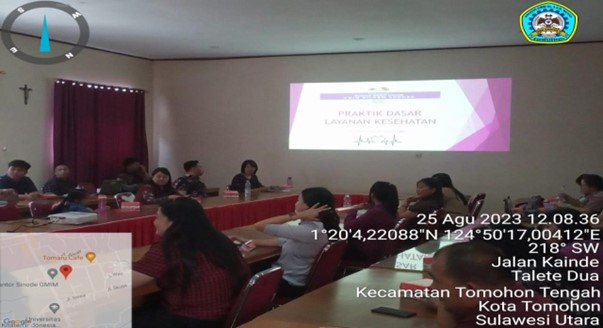
Gambar 5: Materi dari dr. Gabriela V. CH Walewangko
(Dokter RSU GMIM Siloam Sonder)
 Gambar 6: Materi dari dr. Gabriela V. CH Walewangko
(Dokter RSU GMIM Siloam Sonder)
Gambar 6: Materi dari dr. Gabriela V. CH Walewangko
(Dokter RSU GMIM Siloam Sonder)
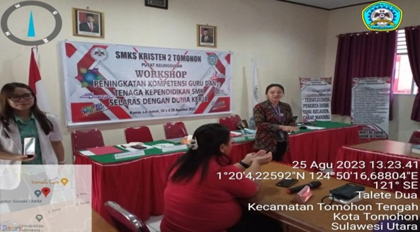
Gambar 7: Peragaan cuci tangan yang baik dari Kepala
Ruangan Paulus RSU GMIM Siloam SOnder
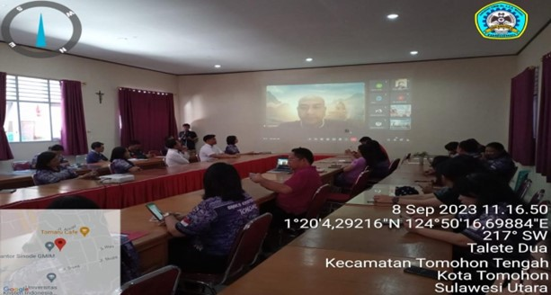
Gambar 8: Sambutan dari Bpk. Trisno Muldani
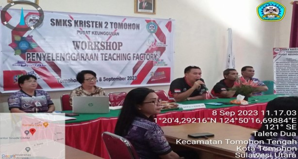
Gambar 9: Sambutan dari Kepala SMKS Kristen 2 Tomohon
Drs. Novrie Sumampouw
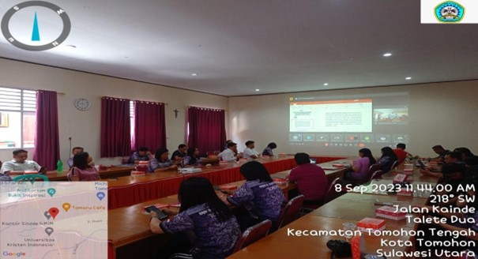
Gambar 10: Materi dari Bpk. Trisno Muldani
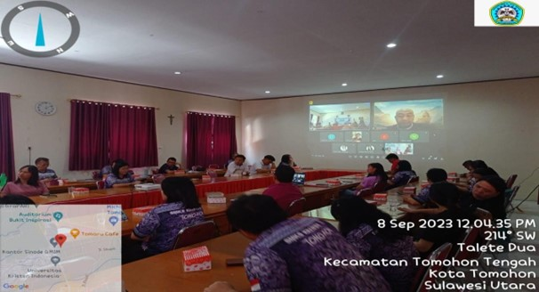
Gambar 11: Sesi tanya jawab dengan peserta workshop
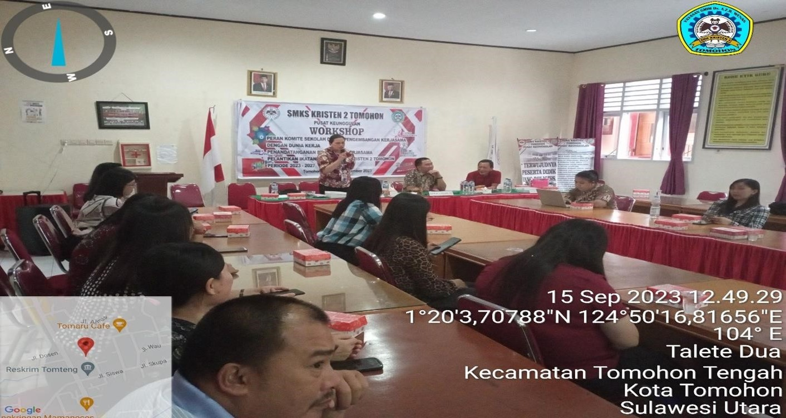
Gambar 12: Materi Dari Kepala Keperawatan RSU GMIM
Siloam
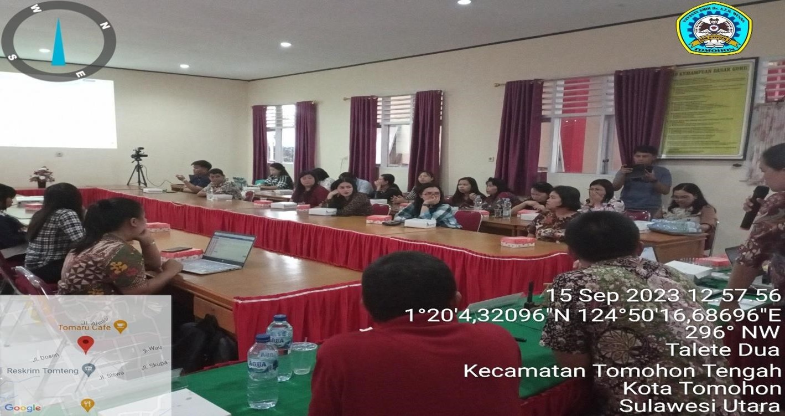
Gambar 13: Materi Dari Kepala Keperawatan RSU GMIM
Siloam Sonder
 Gambar 14: Sesi Tanya Jawab
Gambar 14: Sesi Tanya Jawab
 Gambar 15: Tanggapan dari Audy Posumah, SE (Ketua Komite
SMKS Kristen 2 Tomohon)
Gambar 15: Tanggapan dari Audy Posumah, SE (Ketua Komite
SMKS Kristen 2 Tomohon)
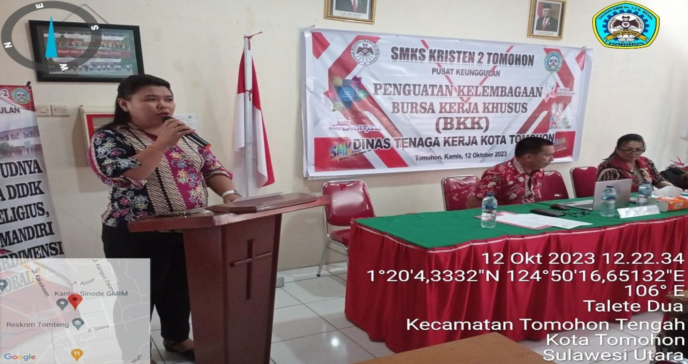
Gambar 16: Ucapan Selamat Datang dari Ns. Desmi Manembu
S.Kep (Ketua Program Keahlian Layanan Kesehatan)
 Gambar 17: Sambutan Dari Drs. Novrie Sumampouw (Kepala
SMKS Kristen 2 Tomohon)
Gambar 17: Sambutan Dari Drs. Novrie Sumampouw (Kepala
SMKS Kristen 2 Tomohon)
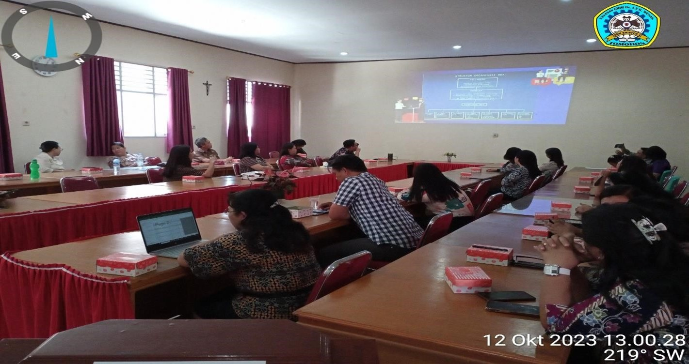
Gambar 18: Materi Dari Mariam M. Rau, S.H., M.H (Kepala
Dinas Tenaga Kerja Kota Tomohon)
 Gambar 19: Materi Dari Mariam M. Rau, S.H., M.H (Kepala
Dinas Tenaga Kerja Kota Tomohon)
Gambar 19: Materi Dari Mariam M. Rau, S.H., M.H (Kepala
Dinas Tenaga Kerja Kota Tomohon)
 Gambar 20: Persiapan Job Fair
Gambar 20: Persiapan Job Fair
 Gambar 21: Persiapan Job Fair
Gambar 21: Persiapan Job Fair
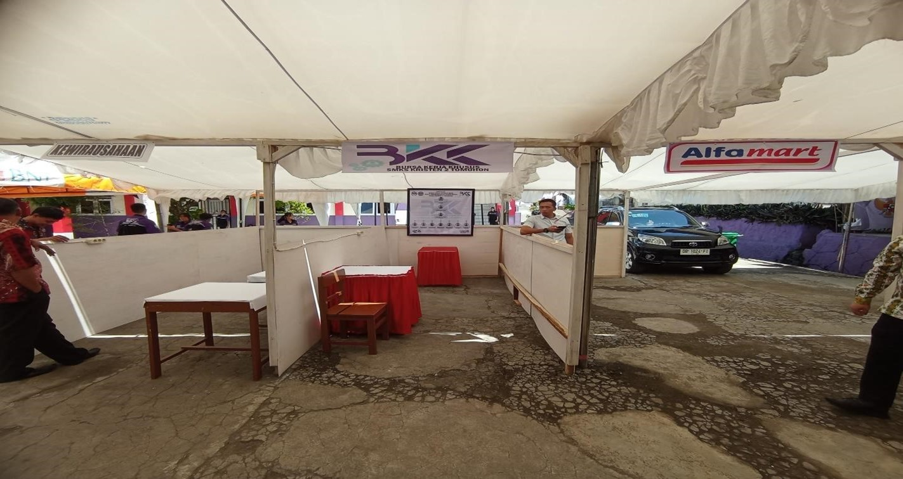
Gambar 22: Persiapan Job Fair
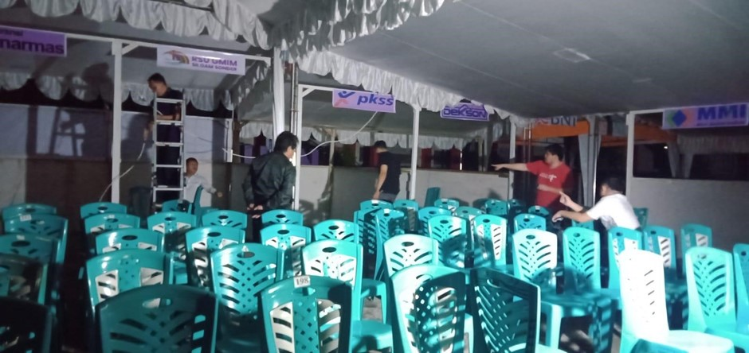
Gambar 23: Persiapan Job Fair
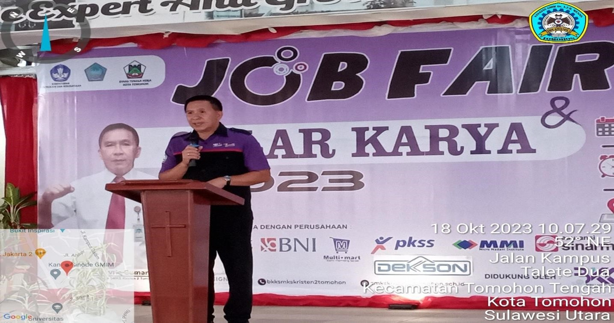
Gambar 24: Sambutan dari Drs. Novire Sumampouw (Kepala
SMKS Kristen 2 Tomohon)
 Gambar 25: Pembukaan Job Fair
Gambar 25: Pembukaan Job Fair
 Gambar 26: Walk In Interview dari Dunia Kerja
Gambar 26: Walk In Interview dari Dunia Kerja
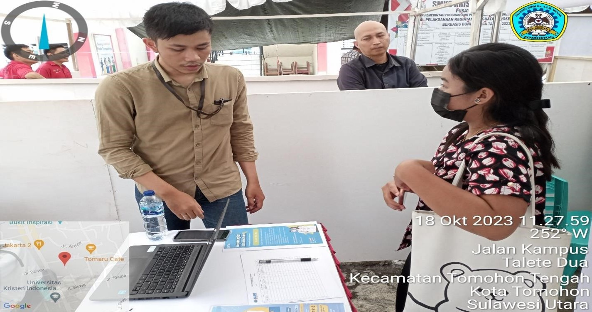
Gambar 27: Walk In Interview dari Dunia Kerja
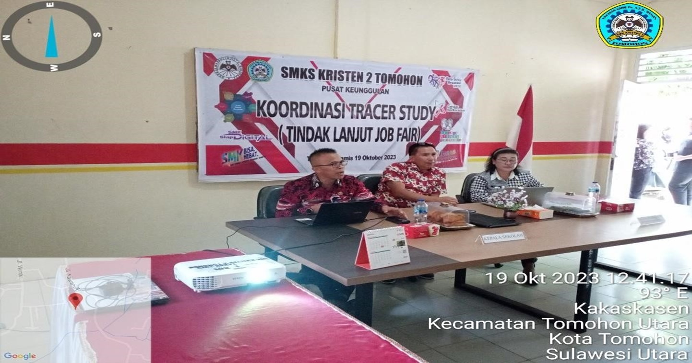
Gambar 28: Materi dari Vecky Pagkerego, S.Pd, M.Pd
(Kepala Bidang SMK Provinsi Sulawesi Utara)
 Gambar 29: Materi dari Vecky Pagkerego, S.Pd, M.Pd
(Kepala Bidang SMK Provinsi Sulawesi Utara)
Gambar 29: Materi dari Vecky Pagkerego, S.Pd, M.Pd
(Kepala Bidang SMK Provinsi Sulawesi Utara)
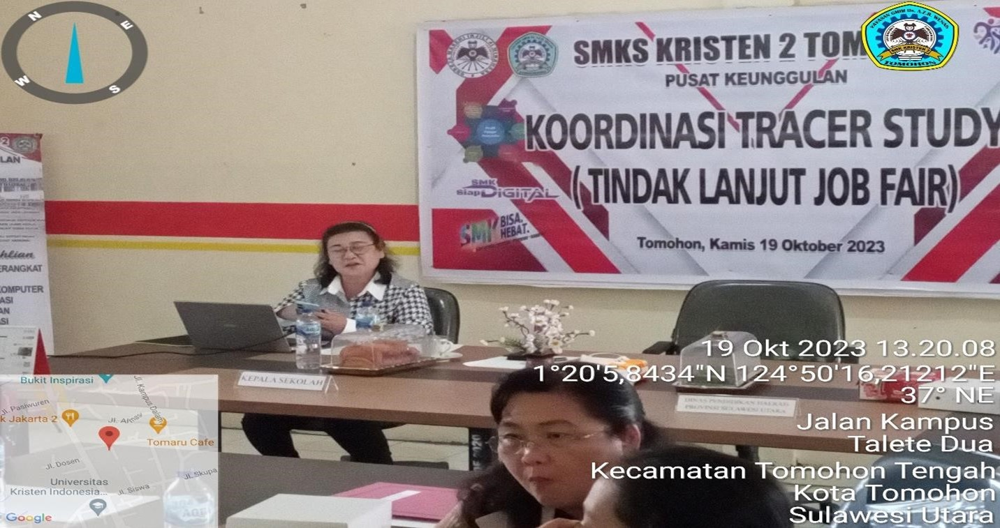
Materi dari POKJA Tracer Study Sulawesi Utara
 Gambar 31: Materi dari POKJA Tracer Study Sulawesi Utara
Gambar 31: Materi dari POKJA Tracer Study Sulawesi Utara